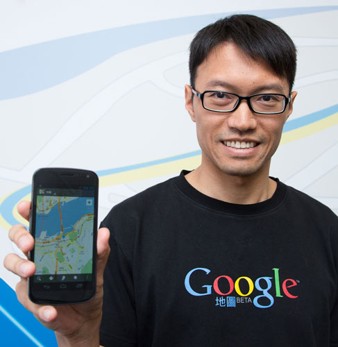

Get connected with the greatest minds in the industry with the latest Internet development, news, various development platform techniques, hints and tips. Prominent speakers around the world are coming all together with motivating and inspirational talks and workshops. Hundreds of developers will gather at the summit to meet, learn and exchange experiences and ideas on different development platform / environment.
The main theme of the event is big data: Cloud - scale your application to million users. It will be divided into two parts: conference and workshops. The workshops will provide a two way communication platform for developers to obtain hands-on experience in small groups to learn new technique, share experience and exchange ideas.
World Internet Developer Summit 2013
Date: 27-28 June 2013
Venue: 27 June at Cyberport, 28 June at Hong Kong Science Park
So don’t miss out and keep yourself in the loop with our latest development and news. Pre-register now to join the rest of developers in Hong Kong and its surrounding region for one of the most exciting and engaging event yet. Official registration will soon be launched, please register now to get the most up-to-date information about the event.
Keynote Speakers

Ben Luk
Google APAC Geo Lead
Google Maps
Ben Luk is in charge of all Google Maps products across the APAC region, with a focus on
Greater China. As one of the pioneers for Google Maps in Hong Kong, Ben is an instrumental
part of the mobile applications team and works on mobile local search, including location
queries and map view. He works closely with Google Mobile Maps teams in the region and
Mountain View, to deliver the best Maps services for users in the region. Since joining
Google in 2003, Ben has been involved in key Geo initiatives such as maps services in
Hong Kong and Taiwan.
Ben began his career with engineering roles at Microsoft and Oracle. He holds a M.S. in
Computer Science from Stanford University, as well as a B.S., Summa Cum Laude, in
Computer Science, from Cornell University.

Dr. Lei Gao
Staff Software Engineer, LinkedIn
Dr. Lei Gao joined LinkedIn in 2009 and he currently leads the Project-Voldemort
(an open-sourced highly available, scalable, and eventually consistent key-value store) team.
Other projects he worked on at LinkedIn include DataBus, LinkedIn's low latency change data
capture system, and Consistency-Aware Data Service Router. Prior to joining LinkedIn, Lei Gao
was a key contributor to Oracle Streams/XStream, Oracle's high performance multi-master data
replication solution.
Lei Gao's PhD dissertation focuses on optimizing the availability, consistency, and
performance tradeoffs in WAN data replication for distributed systems. He has published
papers and given talks in numerous data engineering and distributed systems conferences. And
he is passionate about open-source projects being the future of big-data.
Britt Selvitelle
Early Engineer at Twitter (Founding Team)
Volunteer Engineer at Obama for America
Britt Selvitelle was one of the founding engineers at Twitter, where he helped scale the
company both technically and socially for 5 years, from 2007 to 2011. Most recently he spent
time working with the Obama campaign to ensure the system could handle the fast increasing
traffic as the election drew near.
Keynote: Google Maps
Google
Ben Luk
Google APAC Geo Lead
Ben Luk is in charge of all Google Maps products across the APAC region, with a focus on
Greater China. As one of the pioneers for Google Maps in Hong Kong, Ben is an instrumental
part of the mobile applications team and works on mobile local search, including location
queries and map view. He works closely with Google Mobile Maps teams in the region and
Mountain View, to deliver the best Maps services for users in the region. Since joining
Google in 2003, Ben has been involved in key Geo initiatives such as maps services in
Hong Kong and Taiwan.
Ben began his career with engineering roles at Microsoft and Oracle. He holds a M.S. in
Computer Science from Stanford University, as well as a B.S., Summa Cum Laude, in
Computer Science, from Cornell University.
Keynote
LinkedIn
Dr. Lei Gao
Staff Software Engineer, LinkedIn
Dr. Lei Gao joined LinkedIn in 2009 and he currently leads the Project-Voldemort
(an open-sourced highly available, scalable, and eventually consistent key-value store) team.
Other projects he worked on at LinkedIn include DataBus, LinkedIn's low latency change data
capture system, and Consistency-Aware Data Service Router. Prior to joining LinkedIn, Lei Gao
was a key contributor to Oracle Streams/XStream, Oracle's high performance multi-master data
replication solution.
Lei Gao's PhD dissertation focuses on optimizing the availability, consistency, and
performance tradeoffs in WAN data replication for distributed systems. He has published
papers and given talks in numerous data engineering and distributed systems conferences. And
he is passionate about open-source projects being the future of big-data.
Keynote
Britt Selvitelle
Early Engineer at Twitter (Founding Team)
Volunteer Engineer at Obama for America
Britt Selvitelle was one of the founding engineers at Twitter, where he helped scale the
company both technically and socially for 5 years, from 2007 to 2011. Most recently he spent
time working with the Obama campaign to ensure the system could handle the fast increasing
traffic as the election drew near.
Presentation
Square

Paul McKellar
Co-founder, Square
Paul is a an entrepreneur and programmer based out of San Francisco. Recently, he has been
acting as an EIR at SVAngel, the very prolific angel investment firm of Ron Conway. Previously,
Paul was part of the founding team at Square where he worked on product development and
engineering. Paul first came out to the valley through Y Combinator where he created multiple
Facebook applications which grew to millions of users.
Presentation
Microsoft
Matt Valentine
Enterprise Solution Director, Microsoft Hong Kong
Matt Valentine is the Enterprise Solution Director for Microsoft Hong Kong. Matt has over
20 years of IT industry experience delivering business applications around the world at
AT&T, IBM, ATG and Microsoft. Key projects have included distributed computing
applications at telecommunications and insurance companies, development of several of the
world’s largest travel e-commerce web sites, and product marketing and management. Matt
joined Microsoft’s world headquarters in Redmond, WA, 2003, where he led product management,
marketing and strategy for server software and online services before joining Microsoft Hong
Kong in 2011. Matt holds a BS in Computer Science from Bucknell University and is passionate
about helping customers innovate with software.
Presentation: Porting to the Web: An Introduction to Emscripten
Mozilla

Ting-Yuan Huang
Software Engineer, Mozilla
Ting-Yuan Huang is a senior software engineer in Mozilla. He joined Mozilla and engaged
in the B2G project since October 2012. He's working on performance tuning and memory saving
currently. Before joining Mozilla, he was the leader of the virtual machine team of Mstar
Semiconductor and worked on Java Virtual Machine and compilers.
Ting-Yuan earned a master's degree in electrical engineering and a bachelor's degree of
computer science from National Taiwan University.
Sponsorship Opportunity
Connect with your target audience by sponsoring the World Internet Developers Summit.
Sponsors can choose from many levels of sponsorship options. For more information,
please contact us at sec@isoc.hk.
Diamond Sponsorship: HKD 80,000
Diamond Sponsors receives maximum recognition and profile throughout the summit. As a
major event sponsor, it is a great way to distinguish your leadership, network, show your
organization’s industry involvement and speak at the summit.
Diamond Sponsorship also includes:
- A prominent speaking role at the event*
- Conduct one workshop with hands-on practice
- Five complimentary tickets for workshops
- Insert one leaflet into the seminar welcome kit
- Large and prominent logo positioning and sponsorship mentioning on printed materials and venue production
- Large and prominent logo positioning and linkage on event website and e-mail announcements
- Distribution of company-supplied gift (e.g.: bags, mouse pads, pens, etc.) during registration
- Pre-emption of sponsorship of event satchel, T-shirt, souvenirs (e.g.: pen, memo), lanyard etc.
Gold Sponsorship: HKD 50,000
Gold Sponsors can increase your organization’s visibility by distributing your marketing
materials at the summit and on the event’s promotional materials.
Gold Sponsorship includes:
- Send one representative as panelist at panel discussion
- Three complimentary tickets for workshop
- Insert one leaflet into the seminar welcome kit
- Large and prominent logo positioning and sponsorship mentioning on printed materials and venue production
- Large and prominent logo positioning and linkage on event website and e-mail announcements
- Distribution of company-supplied gift (e.g.: bags, mouse pads, pens, etc) during registration
Silver Sponsorship: HKD 30,000
Silver Sponsors can provide exposure of your organization in the seminar’s marketing promotion.
Silver Sponsorship includes:
- One complimentary ticket for workshop
- Insert one leaflet into the seminar welcome kit
- Logo positioning and sponsorship mentioning on printed materials and venue production
- Logo positioning and linkage on event website and e-mail announcements
Welcome Reception Sponsorship: HKD 100,000
Your company will be recognized as a sponsor of the Welcome Reception for an estimation
of 300-500 developers. You will have a chance to speak at the reception and appropriate
signage can be positioned in the reception room.
Welcome Reception Sponsorship includes:
- Speech at sponsored Reception Event and exhibition of company name and logo*
- Five complimentary tickets for workshop
- Five invitations to the Welcome Reception Event
- Insert one leaflet into the seminar welcome kit
- Logo positioning and sponsorship mentioning on printed materials and venue production
- Logo positioning and linkage on event website and e-mail announcements
(*Speaker’s topic and presentation content must be agreed by the program team. Sales and marketing is prohibited.)
Date: 27 - 28 June, 2013 (Thu - Fri)
Venue:
27 Jun - Cyberport (Ocean View Court, The Arcade, Cyberport 3, 100 Cyberport Road, HK) (map)
28 Jun - Hong Kong Science Park (Charles K Kao Auditorium - between Lakeside 1 & 2, Phase 2, Hong Kong Science Park, Shatin, HK) (map)